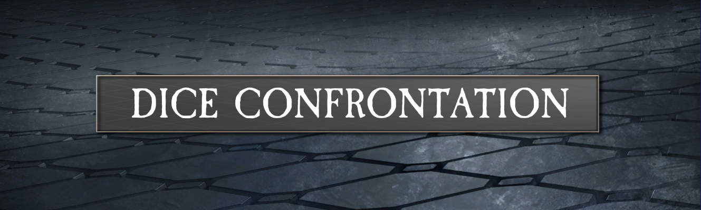
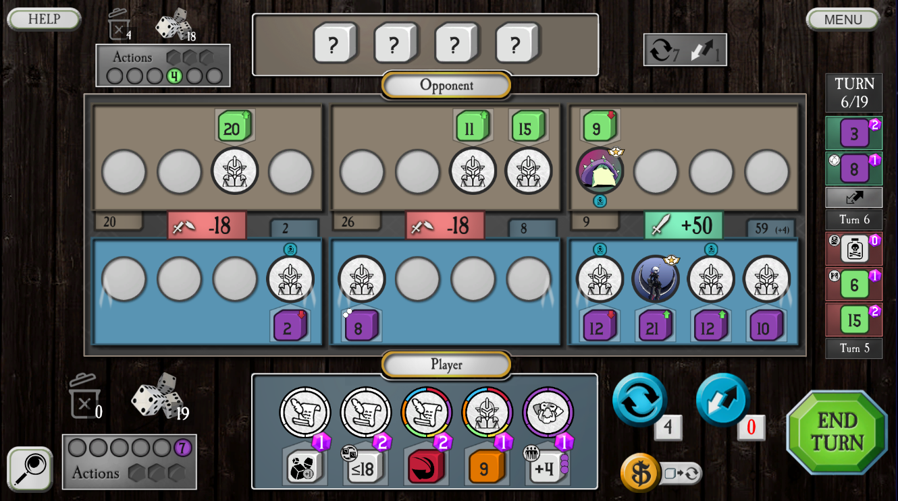
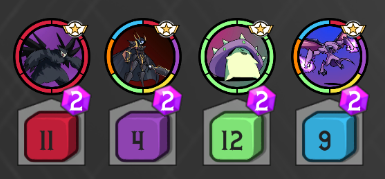
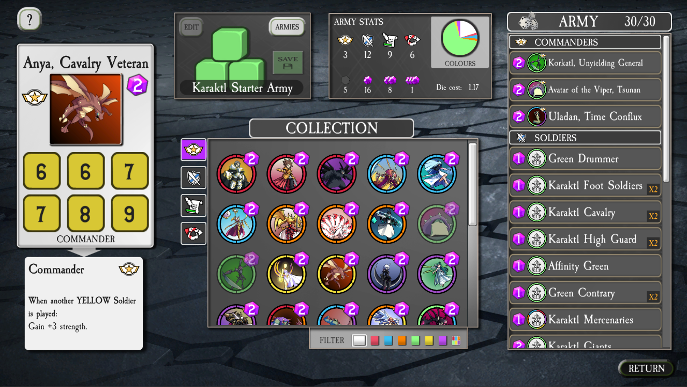
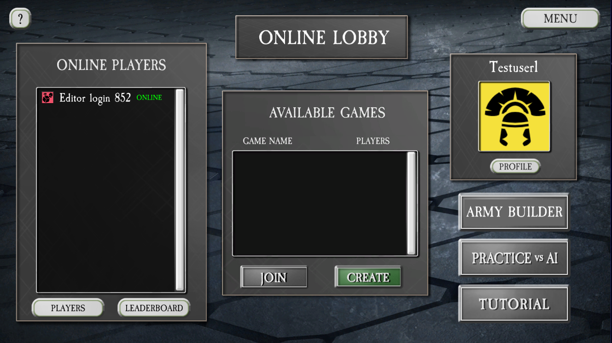

Back to home page

Dice Confrontation is a Collectible Dice Game.
That means it plays very similar to a collectible card game but with the catch that
all the cards have been replaced with 6-sided dice. This gives the game a completely different feel
since each die can show a different side every time you play with them.
The game had multiplayer against other players by creating games on the server but I had to take it down due to server costs. It might come back at some point in the future.
There is also a big tutorial for learning the game which takes about 20-30 minutes to complete and
a single player mode where you can test out decks against an AI opponent instead.

How to play
The objective of the game is to win the war represented by the game.
The war is fought on 3 battlefields and the player that can conquer a majority of them is the winner
once the time is up. Each turn the current player get 3 actions they can use to play dice from their
hand to influence the battlefields. This includes both Soldiers placed into battalions on the battlefields and Warcry and Tactics which changes the soldiers already placed.
The players keep taking turns until a set number of turns have passed.
At that point, you tally up the strength of the soldiers on each battlefield and the player that
wins a majority of the battles are declared the winner.

Commanders
There is a special kind of soldiers in the game called Commanders which are more expensive to play
but have powerful effects that can turn the tide of the battles and are definitely something to
build your armies around. This includes effects such as:
- Gaining strength for each soldier of a certain colour.
- Giving strength to each soldier played.
- Killing the strongest soldier in the war.
- Rerolling all the soldiers placed, causing chaos.

270 different dice to collect!
Before playing a match in Dice Confrontation you need to select an army of dice to use.
These armies are like your deck of cards that contains all the dice you are going to be using
during the match. When playing the game for the first time you get a bunch of pre-built armies
so that you can immedeately jump into a game but at some point you might want to build your own army.
There is an army builder in the game which you can use to construct your own armies.
An army consists of 30 dice. You can have 2 of each die except Commanders which you can only use 1
of each. There are 6 different colours representing different factions with their own strengths
and weaknesses which gives them some character.
Every match you play will give you gems which you can spend to open booster packs which will give you new dice to use. You also gain golden dice by playing which you can trade in for complete armies you can use as a base for creating your own armies.
Download
The client for the game can be downloaded from either Itch.io or Google Play.
This version includes the single player game mode against AI opponents. Unfortunately I had to take down the server because of a lack of players so it's currently not possible to play multiplayer against other players. If enough people bother me about it maybe I add multiplayer back in some shape or form ;)


Possible additional features
Due to being a solo developer I have not been able to implement all the features I wanted of in game as of now and given time and resources I would have liked to have these as well.
Expansions. It would have been a lot of fun to expand on the current die pool with support for more strategies as well as expanding upon the mechanics of the game. It's something all card games get to do and it would have been fun to try my hand at that as well.
Proper matchmaking and online handling. There are some features missing or being very rough concerning the online multiplayer in the game. Right now there is no ranked mode or random matchmaking as players will have to manually find opponents. There is also no way to reconnect players to a game if they were to disconnect from the game which is especially troublesome on mobile.
Spectating. Spectating other players' game is something which would make it much easier to build
a community since it would allow for sharing of strategies and making tournaments.